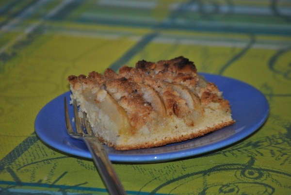

Birnenkuchen mit Nuss-Streuseln

- Zubereitung: ca. 25 Minuten
- Backzeit: ca. 40 Minuten
- Ergibt 24 Stücke
Zutaten
Für die Streusel
- 200 g Nusskernmischung (z.B. von Seeberger)
- 100 g kalte Butter
- 100 g Mehl
- 100 g Zucker
Für den Teig
- 400 g Mehl
- 250 g Butter
- 300 g Zucker und 2 EL zum Bestreuen
- 4 Eier (Größe M)
- 200 g Weichweizen-Grieß
- 1 Pck. Backpulver
- 1 Bio-Zitrone
- 1-2 Prisen Zimt
- 300 ml Milch
- 6-8 reife Birnen
Zubereitung
- Für die Streusel die Nusskerne grob hacken. Die Butter in Würfel schneiden. Das Mehl mit dem Zucker, den gehackten Nüssen und den Butterstücken krümelig kneten, kalt stellen. Den Backofen auf 200° Celsius (Umluft: 180° Celsius) vorheizen.
- Für den Teig Butter und Zucker schaumig rühren. Die Eier einzeln unterrühren. Mehl, Grieß, Backpulver, Zitronenschale und Zimt mischen. Grieß-Mix und Milch unter die Butter-Ei-Masse rühren. Die Birnen schälen, das Kerngehäuse entfernen, die Birnen
der Länge nach in Achtel schneiden, mit Zitronensaft beträufeln.
- Den Teig auf ein mit Backpapier belegtes Backblech streichen, mit Birnenspalten belegen. Streusel darauf verteilen, mit restlichem Zucker (2 EL) bestreuen. Im Ofen ca. 40 Minuten backen. Den Kuchen auskühlen lassen, in Stücke schneiden.